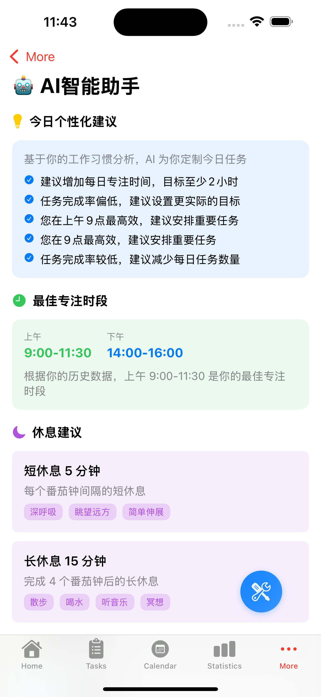
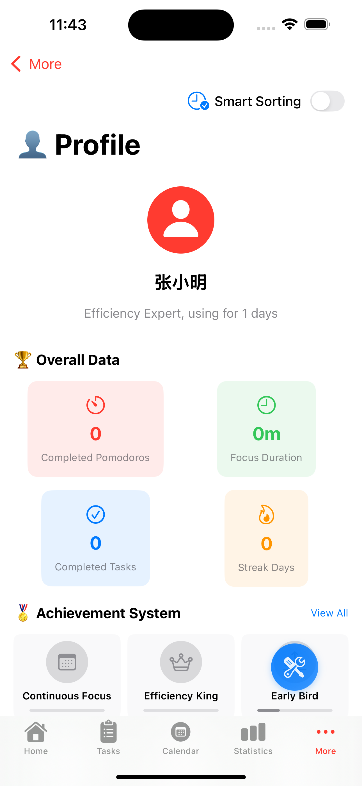
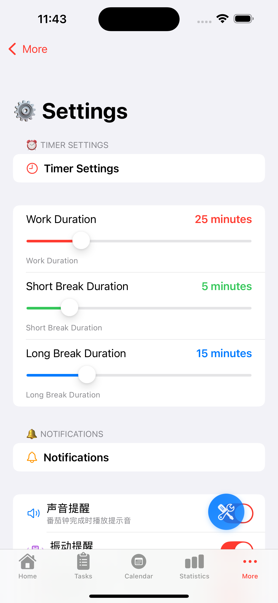
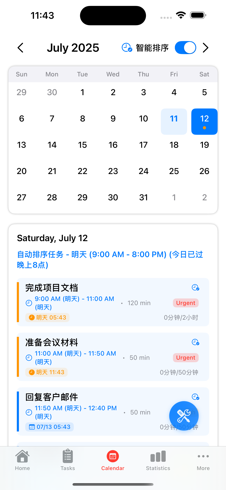

AI驱动的番茄工作法
利用人工智能优化你的专注时间，提升工作效率，科学管理注意力
核心功能
AI智能调节
根据你的工作习惯和专注模式，AI自动调整番茄钟时长和休息间隔
数据分析
详细的专注时间统计和效率分析，帮你了解最佳工作时段
智能提醒
AI学习你的工作节奏，在最佳时机发送个性化的休息和工作提醒
个性化界面
多种主题和声音选择，打造专属于你的专注环境
工作原理
1
AI学习阶段
使用初期，AI观察并记录你的工作模式、专注时长和效率变化
2
智能优化
基于收集的数据，AI算法计算出最适合你的工作和休息时间配比
3
持续改进
随着使用时间增长，AI不断学习和调整，让你的效率持续提升
85%
效率提升
10,000+
活跃用户
4.8★
用户评分
50+
AI优化算法
应用界面预览
直观简洁的界面设计，让专注更简单

智能任务管理

专注计时器

数据统计分析

AI智能建议
开始你的高效之旅
免费下载AI番茄钟，让人工智能帮你找到最佳的工作节奏
完全免费
开源项目
跨平台支持